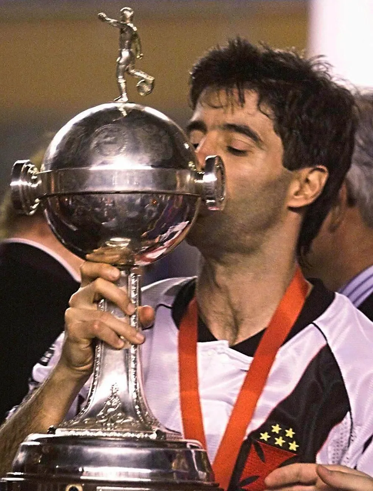
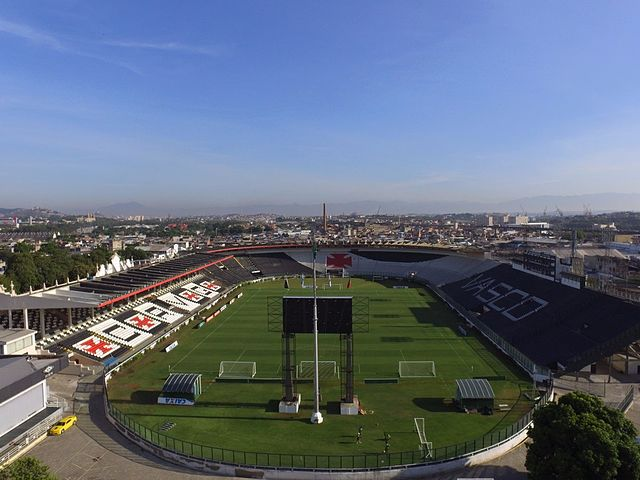
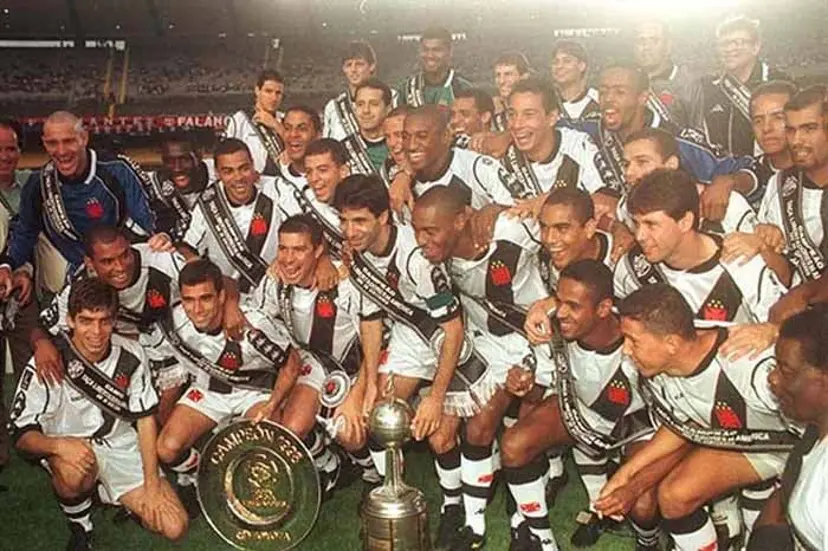

Sala de troféus
1998 – Campeão da Taça Libertadores da América (Bicampeão da América no ano do Centenário do Clube) 2000 – Campeão da Copa Mercosul (Título de nível Sul-Americano) 2000 – Tetracampeão Brasileiro 2000 – Campeão da Taça Guanabara (Invicto) 2001 – Campeão da Taça Rio (Invicto) 2003 – Campeão da Taça Guanabara 2003 – Campeão da Taça Rio (Invicto) 2003 – Campeão Estadual (FFERJ) 2004 – Campeão da Taça Rio 2009 – Campeão Brasileiro da Série B 2010 – Campeão da Copa da Hora 2011 – Campeão da Copa do Brasil 2015 – Campeão Estadual (FFERJ – Campeão no ano do Centenário do Futebol no Clube) 2016 – Taça Guanabara (FFERJ) 2016 – Campeonato Carioca (FFERJ) 2017 – Taça Rio (FFERJ) 2019 – Taça Guanabara (FFERJ) 2021 – Taça Rio (FFERJ)
Destaques do Elenco
Philippe Coutinho;
Léo Jardim
Dimitri Payet
Maicon God of zaga
Léo Pelé
Juan Sforza
Lucas Piton
Guilherme Estrella
Casa do Gigante
O Estádio Vasco da Gama, nosso querido estádio da rua São Januário, completa 96 anos neste 21 de abril de 2023. Sua construção se deu na sequência da luta do Club de Regatas Vasco da Gama por um futebol democrático e inclusivo, uma demonstração incontestável da força desse colosso do esporte mundial, que mesmo possuindo o maior número de torcedores e já tendo sido campeão do Rio de Janeiro, então maior metrópole do Brasil, ainda era visto com preconceito pelos rivais, sendo tratado como um clube de menor importância sob a “justificativa” de não possuir uma arena esportiva. A resposta do Vasco da Gama não poderia ser mais eloquente e vascaína. O Vasco não construiria apenas uma praça esportiva, mas o então maior Stadium da América do Sul! O Estádio de São Januário, inaugurado em 1927, foi construído com as lágrimas, o suor e o dinheiro dos vascaínos. Um verdadeiro templo do povo, construído para reafirmar a grandeza do Vasco e os ideais que o Clube defende desde a sua Fundação. O estádio vascaíno é uma obra monumental, que, assim como a “Resposta Histórica”, materializa a alma do Vasco da Gama que desafiou seus rivais ao ficar ao lado dos seus atletas, enfrentando o racismo, o preconceito social e a xenofobia. São Januário foi a resposta definitiva dos vascaínos aos poderosos da época. Sua construção acabou por demolir a estrutura racista e preconceituosa que dominava o futebol. A realização desse grande feito, um marco para o esporte do Brasil, não seria possível sem a união da imensa colônia portuguesa do Rio de Janeiro com os milhares de brasileiros que passaram a admirar e seguir o C.R. Vasco da Gama.
Idolos Históricos
Roberto Dinamite
Dedé do Vasco
Romário
Edmundo
Juninho pernambucano
Mazinho
Vavá
Deyverson
Times Iconicos
1945: Torneio Início, Torneio Municipal (invicto) e Campeonato Carioca (invicto).
A ascensão de Roberto Dinamite (1974)
O DNA artilheiro de São Januário e o brilho inusitado (1987-1988)
Em pleno Morumbi (1989)
O tricampeonato brasileiro (1997)
O ano triunfal (1998)
O Trem Bala da Colina (2011)
